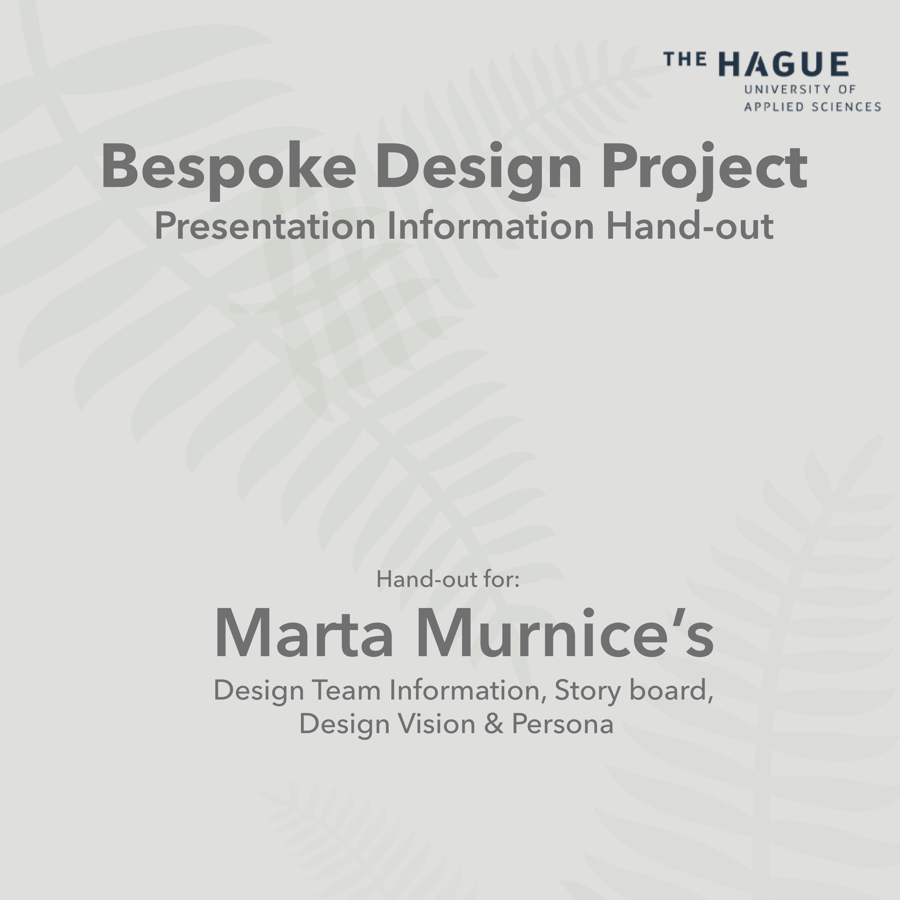

Bespoke Project Information
Project Assignment
As a design team, we had to design a crowd funded gift experience for a bucket list gift for people living far away from friends and family.
When designing this experience we had to keep in mind that our story had to have a beginning, a middle and an ending that is consistent and cohesive. The experience had to have three parts:
- 1. Crowdfunding > Getiing people together to fund the gift.
- 2. Interactive card > Announcing and accessing the digital unwrapping.
- 3. Digital unwrapping > Revealing the gift digitally with the givers represented.
Empathizing Phase

The main goal of this project is to empathize with somebody. And the biggest challange was to stay objective within the failiar context of gift giving and really explore the rituals of others.
Here is the first picture I took when doing my observation. Here it is evident that my user is pointing at jewelry, which she got very exited upon seeing. She voiced out loud that she loved jewelry and that she liked the one she was pointing at a lot. With this I learned that jewelry is a very much appreciated gift for my user.
Defining a Design Vision

Here I write out and find my direction for my design vision. The reason I am using a design vision is because a good design vision can inspire and motivate you or your Design team to come up with creative ideas. You get a clear view about what you have to do as a designer, why you do it, and how it serves an overall purpose to the user.
Prototyping Phase
First Prototypes

In the Crowdfunding column (first column), with the help of my design team, I thought of doing a simple type of mobile app and website where anyone that wants to be part of the crowdfunding can register their names.
The card would first be received saying “Happy birthday” to the wrong name and family picture on it (like a prank). There will be a red button at the bottom of the card which reads “press to see a huge surprise!”. When the user presses this button, they will be directed to the actual interactive card which tells them happy birthday!.
In this part, the user has been directed to map on the phone which has one pin dropped on the map with no address or anything, and the person has to follow the directions on the map.
First Card Prototype

This is already an improvement from the first card shown in the first prototype. We later realised this card was a bit too complex in order to make the real one.
Testing the final Products
Based on the feedback given by Hallmark there were some changes in customization plus some more options for the user, as well as previews of what the user is actually buying. These were requests made by Hallmark.
Results form feedback with the client:
Final Tested Interphase
Final Tested Interactive Card
By this point in our prototype we were (design team) quite confident that the prototype satisfied every need of hallmark in this particular context that we made the prototype for. Because they would want to use it for commercial purposes we found out that our prototype is not enough for making mass production. After getting feedback my design team regrouped and we found ways to make it available not only for our user but for multiple people who would want to use it. Our story board change a bit since we got feedback in the last weeks.
Youtube videos of final products
Crowdfunding Prototype
Digital Unwrapping Prototype
To see full jounal click bellow
DownloadCurrent University
The Hague University of Applied Sciences | The Hague, NL
User Experience Design (CMD) Degree, 2018-2021
3 year full-time English program.